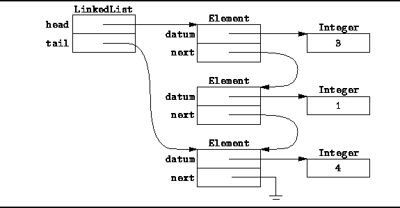
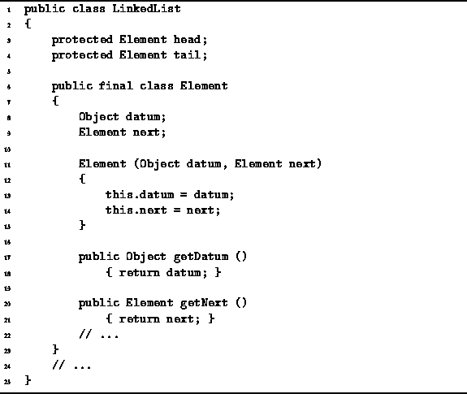
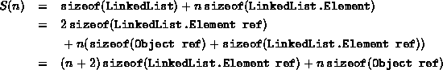

Data Structures and Algorithms
with Object-Oriented Design Patterns in Java
Data Structures and Algorithms
with Object-Oriented Design Patterns in Java
Figure  illustrates the
the singly-linked list scheme we have chosen to implement.
Two related structures are used.
The elements of the list are represented using instances
of the LinkedList.Element class which comprises two fields,
datum and next.
The former is used to refer to the objects in the list;
the latter is a pointer to the next list element.
The main structure is an instance
of the LinkedList class which also comprises two fields,
head and tail,
which refer to the first and last list elements, respectively.
illustrates the
the singly-linked list scheme we have chosen to implement.
Two related structures are used.
The elements of the list are represented using instances
of the LinkedList.Element class which comprises two fields,
datum and next.
The former is used to refer to the objects in the list;
the latter is a pointer to the next list element.
The main structure is an instance
of the LinkedList class which also comprises two fields,
head and tail,
which refer to the first and last list elements, respectively.

Figure: Memory representation of a linked list.
Program defines the LinkedList.Element class.
It is used to represent the elements of a linked list.
It has two fields, datum and next,
a constructor and two public accessor methods.
Program also defines the fields of the LinkedList class,
head and tail.

Program: LinkedList fields and LinkedList.Element class.
We can calculate the total storage required, S(n),
to hold a linked list of n items
from the class definitions given in Program
as follows:

In Java all object references occupy a constant amount of space. Therefore, S(n)=O(n).
 Copyright © 1998 by Bruno R. Preiss, P.Eng. All rights reserved.
Copyright © 1998 by Bruno R. Preiss, P.Eng. All rights reserved.